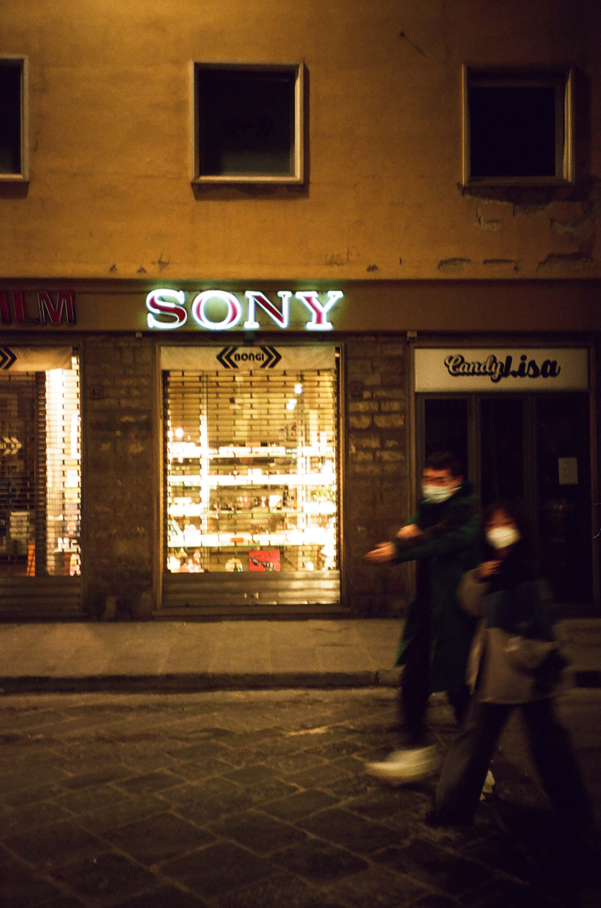
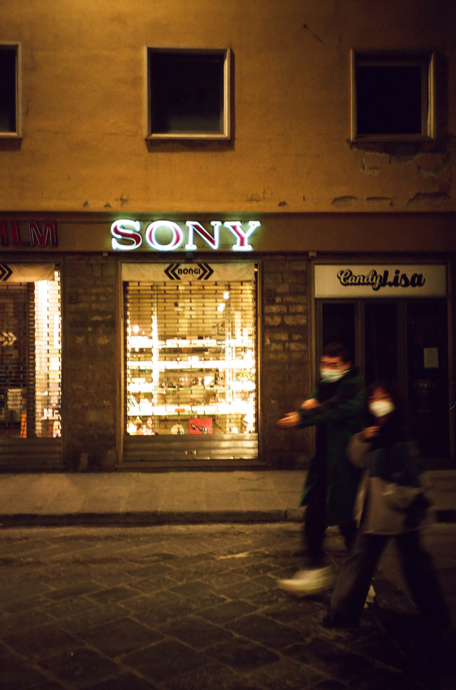

Galen Aubrey Hicks
alone
These photos are from a project I did that was examining my experience in college during the pandemic.
Each of these photos was taken in a place that I frequented by myself, trying to be somewhere other than my dorm room.
I wanted to show how, even though these were places in which I usually found myself alone, I never felt lonely.
The "cloning" of myself was to show this feeling of being in your own company.


firenze
Photos I took in Florence, Milan, Como, and Zurich in 2021

 
